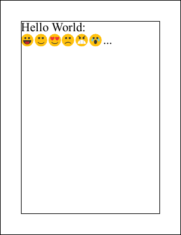

This example shows how to create a font Doc from a set of SVG files for use as the basis of a custom font. For an example showing how to use the emojifont.pdf document see the Embed method.
[C#]
using var doc = new Doc();
string icons = "../Rez/icons";
CustomFontMaker.Append(doc, icons, "happy-svgrepo-com.svg", 0x1F600);
CustomFontMaker.Append(doc, icons, "smiling-svgrepo-com.svg", 0x1F601);
CustomFontMaker.Append(doc, icons, "in-love-svgrepo-com.svg", 0x1F60D);
CustomFontMaker.Append(doc, icons, "sad-svgrepo-com.svg", 0x1F614);
CustomFontMaker.Append(doc, icons, "angry-svgrepo-com.svg", 0x1F620);
CustomFontMaker.Append(doc, icons, "crying-svgrepo-com.svg", 0x1F62F);
CustomFontMaker.Baseline(doc, 0.2);
doc.Save("emojifont.pdf");
[C#]
class CustomFontMaker {
public static void Append(Doc doc, string dir, string file, int unicode) {
using var icon = new Doc();
icon.Read(Path.Combine(dir, file));
doc.Append(icon);
doc.PageNumber = doc.PageCount;
doc.AddBookmark($"0x{unicode:X}", false);
}
public static void Baseline(Doc doc, double baseline) {
var pages = doc.ObjectSoup.Catalog.Pages.GetPageArrayAll();
var bbox = new XRect();
foreach (var page in pages)
bbox.Union(page.MediaBox);
var scale = new XTransform(1, 0, 0, 1, 0, -bbox.Top * baseline);
foreach (var page in pages) {
doc.Page = page.ID;
var layers = page.GetLayers();
if (layers.Length > 0) {
// scale contents
var contents = (ArrayAtom)page.Resolve(Atom.GetItem(page.Atom, "Contents"));
var restore = new StreamObject(doc.ObjectSoup, Encoding.ASCII.GetBytes($" Q"));
contents.Insert(layers.Length, new RefAtom(restore));
var save = new StreamObject(doc.ObjectSoup, Encoding.ASCII.GetBytes($"q {scale.String} cm "));
contents.Insert(0, new RefAtom(save));
// update page boundaries
page.MediaBox.Union(XRect.FromPoints(scale.TransformPoints(page.MediaBox.GetCorners())));
if (page.CropBox != null)
page.CropBox.Union(XRect.FromPoints(scale.TransformPoints(page.CropBox.GetCorners())));
if (page.ArtBox != null)
page.ArtBox.Union(XRect.FromPoints(scale.TransformPoints(page.ArtBox.GetCorners())));
if (page.BleedBox != null)
page.BleedBox.Union(XRect.FromPoints(scale.TransformPoints(page.BleedBox.GetCorners())));
}
}
}
}

emojis.pdf
|
|
|